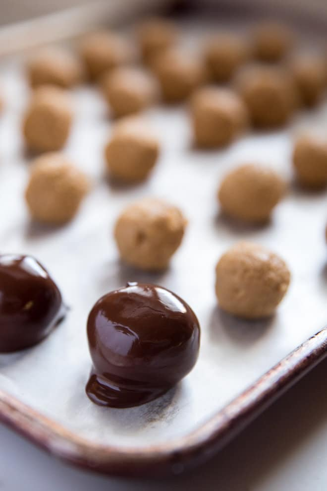

No Bake Peanut Butter Balls Recipe
Recipe website
Ingredients
1 cup crushed graham crackers
1 cup creamy peanut butter
1 cup powdered sugar
1/4 cup butter softened (1/2 stick)
8 ounces semisweet baking chocolate
Directions
In a large bowl, add graham cracker crumbs, peanut butter, powdered sugar, and butter. Stir until uniformly combined and smooth.
Shape into teaspoon-sized balls and place on a baking sheet lined with parchment paper or a silicone mat. Chill at least 30 minutes.
Set chocolate in a bowl over a pot of simmering water (double-boiler method) or melt in the microwave at 50
%
power in
30-second increments
(stirring well after each increment). Using two spoons, dip peanut butter balls into melted chocolate and transfer to prepared baking sheet. Chill at least 30 minutes to set chocolate.
Contact me!
The University of Montana
32 Campus Dr
Missoula, MT 59812
